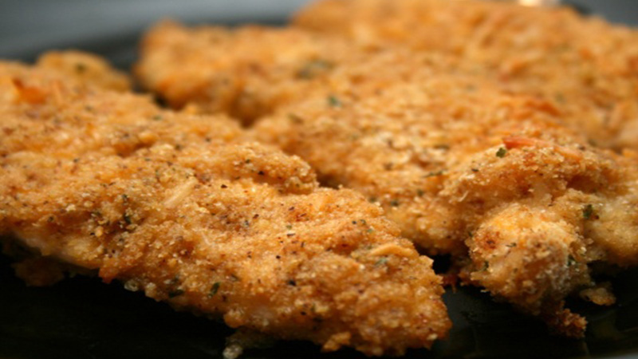

<!--
 Name:Neville Zou
 Student Id:
-->
<div class="pages">
<div data-page="projects" class="page no-toolbar no-navbar">
   <div class="page-content">
      <!--top header-->
      <div class="navbarpages">
         <div class="nav_left_logo"><a href="index.html"></a></div>
         <div class="nav_right_button">
		 <!--A link to Open Main Nav-->
            <a href="menu.html"></a>
			<!--A link to go back to Previous Page-->
            <a href="food-menu.html"></a>
         </div>
      </div>
	   <!--top header-->
      <div id="pages_maincontent">
         <h2 class="page_title">Our Recepie</h2><!-- the header information of the page -->
         <div class="post_single">
		  <!--Recipe Image And title-->
            <div class="featured_image">
               <!-- image tag for diplay image in browser-->
               <div class="post_title_single">
                  <h2>Moist Cheddar-Garlic Oven Fried </h2>
               </div>
               <div class="post_social">
                  <a href="#" data-popup=".popup-social" class="open-popup"></a>              
               </div>
            </div>
			 <!--Recipe Image And title-->
            <div class="page_content">
               <div class="entry">
			    <!--Recipe Detail--> 
                  <ul class="simple_list"> <!-- unorderlist tag-->
                     <li>This is for serious garlic lovers. The chicken bakes out so moist and tender! Grated cheese may be sprinkled on top of the breast the last 5 minutes of cooking if desired but that is optional. Double all ingredients for more than four breasts and adjust the amount of garlic to suit taste.</li> <!--LIst items-->
                     <li>For the coating amount you might be able to get away with 5 or maybe 6 very small chicken breasts, but I would suggest to increase the amount slightly --- to take this dish to yet another level, about 10 minutes before the cooking time is finished, drizzle the top of the chicken with a little pasta sauce, then sprinkle mozzarella cheese on top. Return to oven for about 10 minutes until the chicken is completely cooked and sauce is hot and cheese has melted.</li>
                     <li>For a lemon-garlic flavor add in 3 tablespoons lemon juice to the melted butter/garlic mixture --- *NOTE* for a healthier alternative Smart Balance Butter Blend may be used in place of the melted butter --- you will love this chicken! Visit my food blog, www.kittencalskitchen.com, for more of my recipes.</li>
                  </ul>
               </div>
			    <!--Recipe Detail-->
            </div>
         </div>
      </div>
   </div>
</div>